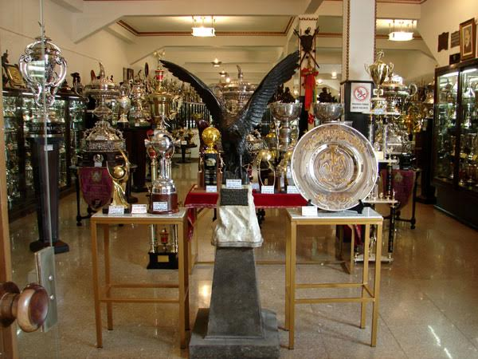
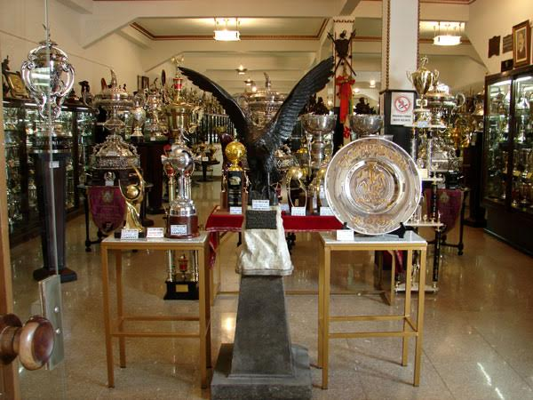
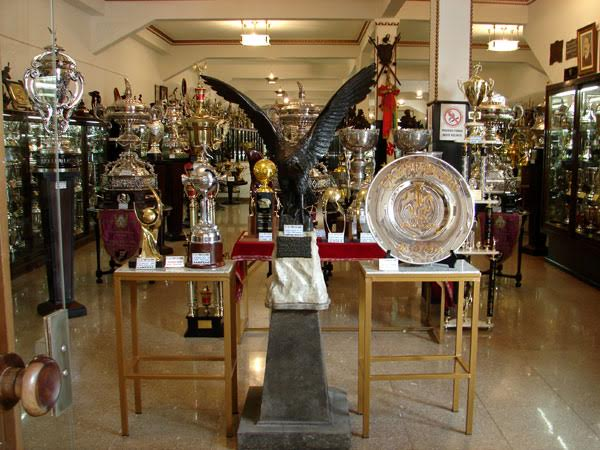

Vasco FC

História do Vasco
Escudo do Vasco
Origem do Escudo do Vasco
PARA VER TODOS OS ARQUIVOS
Acesse o GitHub para pegar os exemplos feitos
PARA BAIXAR ESSE CONTEUDO EM PDF
Vasco FC
PARA PUBLICAR O SITE
Rotinas para publicar o site.
 
História do Vasco
Escudo do Vasco
Origem do Escudo do Vasco

História do Vasco
Escudo do Vasco
Origem do Escudo do Vasco